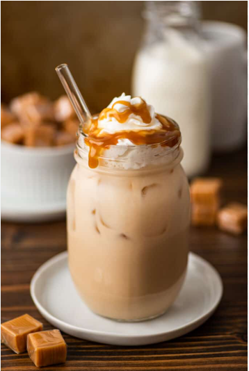

Cold Coffee

As we head into warmer weather, I’m more than ready to dust off all my favorite cold and frosty drink recipes. Hot chocolate can take a little break. It’s time for iced mochas, iced white chocolate mochas, and all the iced chai lattes we can drink.
While a true latte is made with espresso, for this homemade version, we’re going to use coffee (see the ingredient notes if you’d like to use espresso) since that’s what most people have available to them.If you have a pot of coffee already brewed, you can make and be sipping a creamy, caramel-y iced latte in about 2 minutes.
Ingredient
-
Coffee: Use whatever coffee you have on hand, brewed strong if you want to really boost that coffee flavor. If you’d like to use a shot of espresso instead of coffee, just increase the milk in the recipe to 3/4 cup.
-
Cream: Cream is optional, but I love adding a little splash of it for extra richness. Feel free to substitute a splash of half and half if that’s what you keep on hand. And you’ll definitely have some leftover heavy cream, so check out my post What to Do With Leftover Whipping Cream for storage tips and recipe ideas for the leftovers.
-
Caramel sauce: Use your favorite caramel sauce here. If caramel sauce isn’t something you keep stocked, pick some up the next time you’re at the store or make my quick shortcut caramel sauce
Steps
-
Pour hot coffee into a liquid measuring cup or any container with a lip for easy pouring. Stir in caramel sauce and sugar until completely dissolved. Add cold milk and optional heavy cream
-
Add ice to a 16-ounce cup and pour coffee mixture over the top of the ice.
-
Top with whipped cream and more caramel sauce if desired, and enjoy!